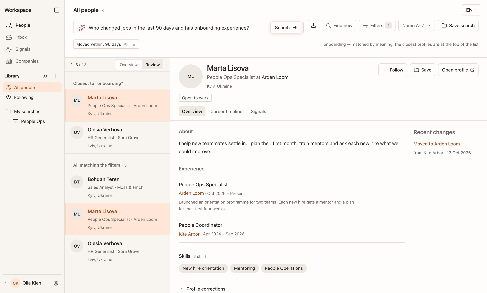

From a Figma design to a subscription funnel
I built most of the MCP platform for the growth team. In this example, an editor checks where a button leads in a reading quiz and reviews its label in two languages.

I build tools that take care of repetitive work. Here you can find a flat using its photos, turn a week of moderator messages into a report, or find a board game for your group.

Describe the flat you want. Compare nine listings and check the photos behind each score.
Find a flatChoose a week, inspect the alerts and mark a false positive. See the report update with your decision.
Build a reportI built a recommender for my thesis using 30,224 board games. Choose your group size and time budget to get a shortlist.
Find a board gameI recreated these two scenarios with fictional data for my portfolio.
I built most of the MCP platform for the growth team. In this example, an editor checks where a button leads in a reading quiz and reviews its label in two languages.
I built the tool from profile import through search. Here a recruiter looks for people who recently changed jobs and worked on onboarding. The profile on the right shows why the selected candidate made the shortlist.
